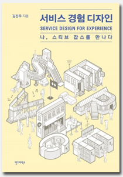

소개
경험 디자인 방법으로 파헤친 서비스의 시작과 끝
서비스는 제품과 달라서 눈에 보이지도 않고 저장할 수도 없다 이런 서비스를 기획하고 디자인하기 위해서는 어떻게 해야 할까?
20년 이상 국내에서 HCI(Human Computer Interaction) 분야를 이끈 연세대학교 경영대학 김진우 교수의 [서비스 경험 디자인: 나, 스티브 잡스를 만나다]가 출간되었다. 이 책은 지은이가 2014년에 집필한 [경험 디자인: 잡스, 철학자 듀이를 만나다]의 후속편이다. 앞선 책이 존 듀이의 경험 철학을 바탕으로 경험 디자인의 원리와 개념을 설명했다면 [서비스 경험 디자인]은 서비스를 실제로 디자인할 때 필요한 실무와 방법을 차근차근 알려준다. 연세대학교 학생들과 함께 진행했던 프로젝트를 예로 들어 서비스를 기획하고 발견한 뒤 정의하고 개발하고 고객에게 전달하는 과정을 상세히 보여준다. 인터뷰할 때 손목시계나 스마트폰을 자꾸 확인하지 말라는 세부적인 조언부터 효과적으로 브레인스토밍 하는 법, 서비스 청사진과 사용자 여정 지도 작성 방법, 서비스 제공자 교육 등 서비스 출시 전에 고려할 요소까지 골고루 담았다. 서비스를 디자인하는 사람에게 실질적인 정보를 제공하는 워크북이라고 하겠다.
핸드메이드 향수 브랜드 르 라보(Le Labo)는 향수를 주문하면 즉시 조향사가 천연 재료를 꺼내 고객이 선택한 향을 조합해 향수로 만들어준다. 고객은 향수 원액, 에탄올, 물이 결합해 향수가 만들어져 병에 담기는 과정을 온전히 경험할 수 있다. 고객의 까다롭고 추상적인 요구에도 적절한 향을 자리에서 조합하여 선보임으로써 고객에게 선택권을 제공한다. 고객은 하나뿐인 향수를 받는 동시에 제작 과정까지 모두 강하게 기억하게 된다. 좋은 서비스의 정의는 여러 가지가 있겠지만 가장 중요한 것은 사용자에게 잊지 못할 ‘경험’을 주는 것이라고 할 수 있다. 서비스를 누리는 사용자의 경험과 제공하는 공급자의 경험, 그리고 관련된 모든 이해관계자까지 중요해졌다. [서비스 경험 디자인]은 사용자 중심을 넘어 서비스를 둘러싼 모든 이들이 중요시되는 디자인을 다룬다. 책에서 정의한 서비스 경험 디자인은 서비스를 사용하는 사람과 서비스를 제공하는 사람들에게 최적의 경험을 주기 위한 원리와 방법이다.
[서비스 경험 디자인]은 진정한 경험을 디자인하려는 모든 이들에게 필요하다. 서비스를 통해 사용자에게 진정한 경험을 주기 위한 우선 요건은 특정 전공이 아니다. 좋은 서비스를 통해 나를 포함한 우리 모두를 편하고 행복하게 하려는 마음이 먼저다. 그래서 다양한 전공과 관심사를 가진 사람, 사람에 대한 따뜻한 배려를 가진 사람, 감수성과 호기심이 넉넉한 사람, 그리고 다른 이와 협동하는 능력을 지닌 사람이 필수적이다. 이 책은 또한 경험 디자인, HCI, UX를 전공하는 학생, 기업에서 서비스를 만들어보려는 사람, 새로운 서비스로 벤처를 창업하려는 사람에게 도움이 될 수 있으며 공공 서비스를 기획하고 실현하는 사람에게도 도움이 될 것이다. 우리가 누리고 있는 서비스에 대해 관심이 있는 사람, 어떤 서비스에 불편함 혹은 행복감을 느낀 경험이 있는 사람들에게도 좋다. 진정한 경험에 관심 있는 사람들이라면 그 경험을 만드는 방법론이 담긴 [서비스 경험 디자인]을 놓치지 말아야 할 것이다.